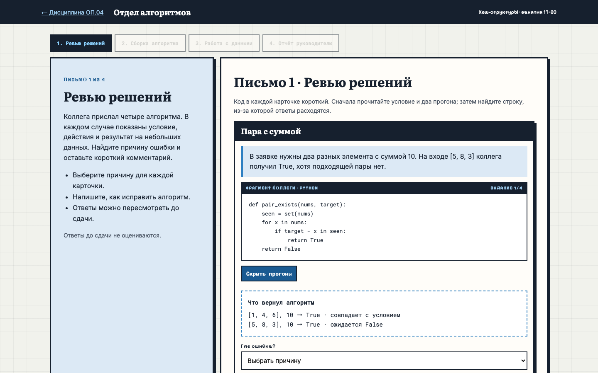

ИНТЕРАКТИВНЫЙ ПРАКТИКУМ · 35–45 МИНУТ
Отдел алгоритмов:
разбор четырёх заявок
Вы проверяете алгоритмы сервиса заказов. За рабочую смену нужно найти ошибки в чужих решениях, собрать порядок действий, обработать небольшие наборы данных и передать руководителю отчёт.
01 · РевьюЧетыре решения коллеги с конкретными ошибками.
02 · СборкаПорядок действий в алгоритме.
03 · ДанныеПары, группы, множества и LRU.
04 · ОтчётСвой выбор структуры и рецензия после сдачи.

Работа сохраняется в этом браузере. До сдачи ответы можно менять. Баллы и разбор открываются после кнопки «Сдать работу».